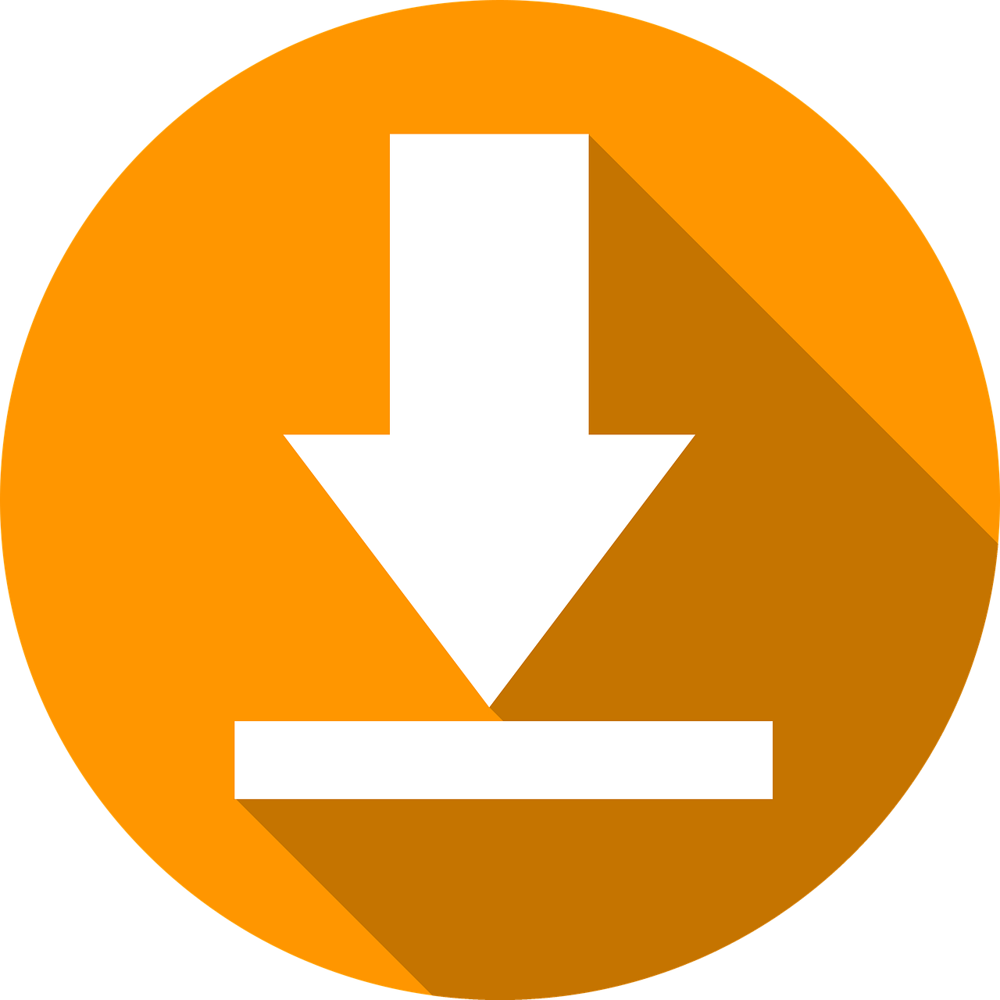

1) Commence par télécharger le fichier ci-dessous.  2) Ouvre-le avec (exemple : PowerPoint, LibreOffice...) et place les motifs de ton choix sur le rectangle qui apparaît. (avec un minimum de 0,05 cm de largeur pour les traits) 3) Envoie-nous le fichier par E-mail à l'adresse scanup.cantine@gmail.com avec : Ton nom, Ton Prénom, Ta classe (exemple : 3e B), avec le fichier que tu as personnalisé, et une photo claire de ton ancienne carte de cantine. 4) Nous vous répondrons dans les plus brefs délais avec les informations complémentaires. 5) La livraison et le paiement se feront au Collège au point de retrait.
Mis à jour le 17/09/25